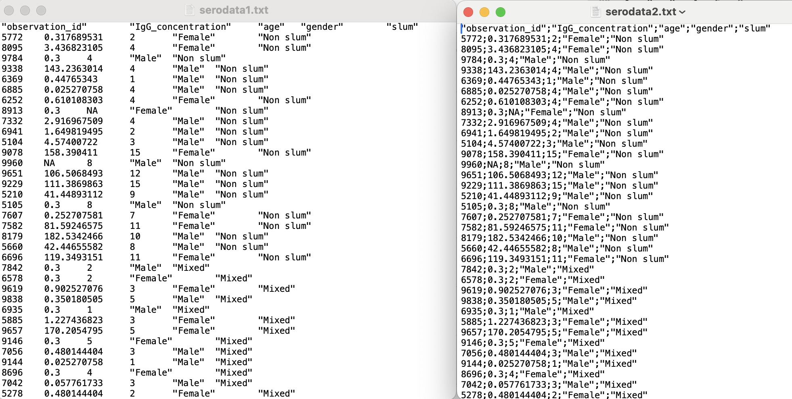
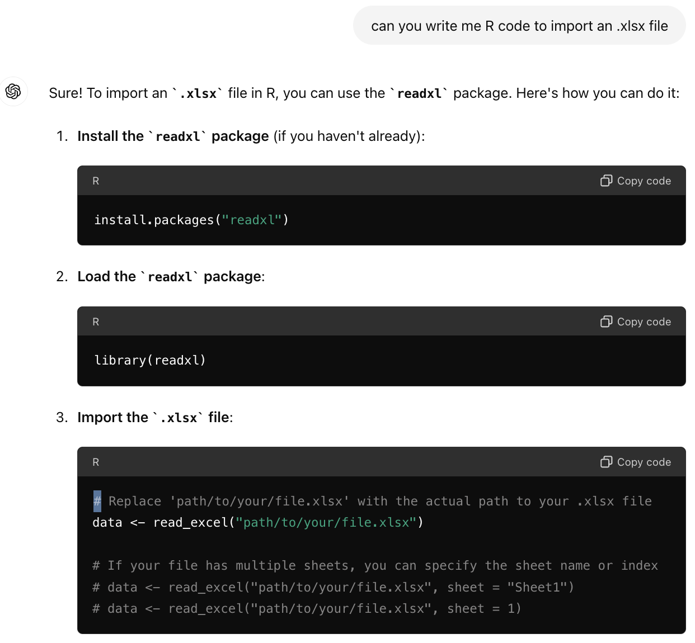
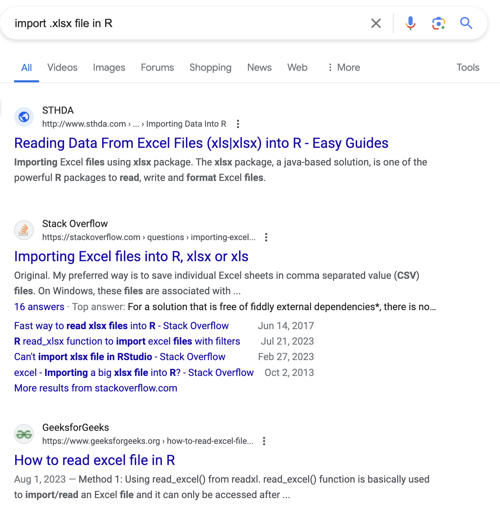
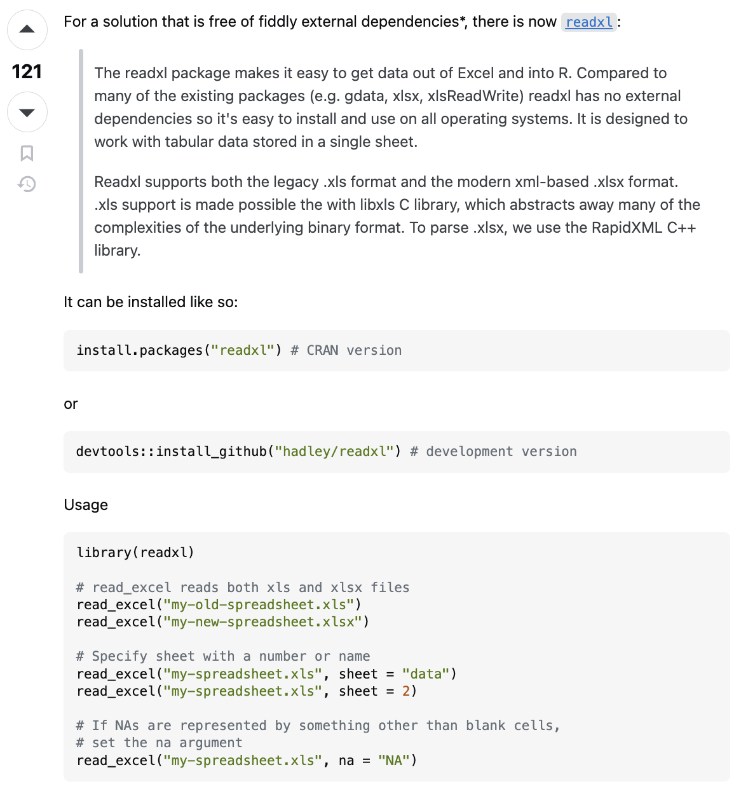

Module 5: Data Import and Export
![]()
Learning Objectives
After module 5, you should be able to…
- Use Base R functions to load data
- Install and attach external R Packages to extend R’s functionality
- Load any type of data into R
- Find loaded data in the Environment pane of RStudio
- Reading and writing R .Rds and .Rda/.RData files
Import (read) Data
- Importing or ‘Reading in’ data are the first step of any real project / data analysis
- R can read almost any file format, especially with external, non-Base R, packages
- We are going to focus on simple delimited files first.
- comma separated (e.g. ‘.csv’)
- tab delimited (e.g. ‘.txt’)
A delimited file is a sequential file with column delimiters. Each delimited file is a stream of records, which consists of fields that are ordered by column. Each record contains fields for one row. Within each row, individual fields are separated by column delimiters (IBM.com definition)
Mini exercise
Download Module 5 data from the website and save the data to your data subdirectory – specifically
SISMID_IntroToR_RProject/dataOpen the ‘.csv’ and ‘.txt’ data files in a text editor application and familiarize yourself with the data (i.e., Notepad for Windows and TextEdit for Mac)
Open the ‘.xlsx’ data file in excel and familiarize yourself with the data - if you use a Mac do not open in Numbers, it can corrupt the file - if you do not have excel, you can upload it to Google Sheets
Determine the delimiter of the two ‘.txt’ files
Mini exercise
Import delimited data
Within the Base R ‘util’ package we can find a handful of useful functions including read.csv() and read.delim() to importing data.
Registered S3 method overwritten by 'printr':
method from
knit_print.data.frame rmarkdownData Input
Description:
Reads a file in table format and creates a data frame from it,
with cases corresponding to lines and variables to fields in the
file.
Usage:
read.table(file, header = FALSE, sep = "", quote = "\"'",
dec = ".", numerals = c("allow.loss", "warn.loss", "no.loss"),
row.names, col.names, as.is = !stringsAsFactors, tryLogical = TRUE,
na.strings = "NA", colClasses = NA, nrows = -1,
skip = 0, check.names = TRUE, fill = !blank.lines.skip,
strip.white = FALSE, blank.lines.skip = TRUE,
comment.char = "#",
allowEscapes = FALSE, flush = FALSE,
stringsAsFactors = FALSE,
fileEncoding = "", encoding = "unknown", text, skipNul = FALSE)
read.csv(file, header = TRUE, sep = ",", quote = "\"",
dec = ".", fill = TRUE, comment.char = "", ...)
read.csv2(file, header = TRUE, sep = ";", quote = "\"",
dec = ",", fill = TRUE, comment.char = "", ...)
read.delim(file, header = TRUE, sep = "\t", quote = "\"",
dec = ".", fill = TRUE, comment.char = "", ...)
read.delim2(file, header = TRUE, sep = "\t", quote = "\"",
dec = ",", fill = TRUE, comment.char = "", ...)
Arguments:
file: the name of the file which the data are to be read from.
Each row of the table appears as one line of the file. If it
does not contain an _absolute_ path, the file name is
_relative_ to the current working directory, 'getwd()'.
Tilde-expansion is performed where supported. This can be a
compressed file (see 'file').
Alternatively, 'file' can be a readable text-mode connection
(which will be opened for reading if necessary, and if so
'close'd (and hence destroyed) at the end of the function
call). (If 'stdin()' is used, the prompts for lines may be
somewhat confusing. Terminate input with a blank line or an
EOF signal, 'Ctrl-D' on Unix and 'Ctrl-Z' on Windows. Any
pushback on 'stdin()' will be cleared before return.)
'file' can also be a complete URL. (For the supported URL
schemes, see the 'URLs' section of the help for 'url'.)
header: a logical value indicating whether the file contains the
names of the variables as its first line. If missing, the
value is determined from the file format: 'header' is set to
'TRUE' if and only if the first row contains one fewer field
than the number of columns.
sep: the field separator character. Values on each line of the
file are separated by this character. If 'sep = ""' (the
default for 'read.table') the separator is 'white space',
that is one or more spaces, tabs, newlines or carriage
returns.
quote: the set of quoting characters. To disable quoting altogether,
use 'quote = ""'. See 'scan' for the behaviour on quotes
embedded in quotes. Quoting is only considered for columns
read as character, which is all of them unless 'colClasses'
is specified.
dec: the character used in the file for decimal points.
numerals: string indicating how to convert numbers whose conversion to
double precision would lose accuracy, see 'type.convert'.
Can be abbreviated. (Applies also to complex-number inputs.)
row.names: a vector of row names. This can be a vector giving the
actual row names, or a single number giving the column of the
table which contains the row names, or character string
giving the name of the table column containing the row names.
If there is a header and the first row contains one fewer
field than the number of columns, the first column in the
input is used for the row names. Otherwise if 'row.names' is
missing, the rows are numbered.
Using 'row.names = NULL' forces row numbering. Missing or
'NULL' 'row.names' generate row names that are considered to
be 'automatic' (and not preserved by 'as.matrix').
col.names: a vector of optional names for the variables. The default
is to use '"V"' followed by the column number.
as.is: controls conversion of character variables (insofar as they
are not converted to logical, numeric or complex) to factors,
if not otherwise specified by 'colClasses'. Its value is
either a vector of logicals (values are recycled if
necessary), or a vector of numeric or character indices which
specify which columns should not be converted to factors.
Note: to suppress all conversions including those of numeric
columns, set 'colClasses = "character"'.
Note that 'as.is' is specified per column (not per variable)
and so includes the column of row names (if any) and any
columns to be skipped.
tryLogical: a 'logical' determining if columns consisting entirely of
'"F"', '"T"', '"FALSE"', and '"TRUE"' should be converted to
'logical'; passed to 'type.convert', true by default.
na.strings: a character vector of strings which are to be interpreted
as 'NA' values. Blank fields are also considered to be
missing values in logical, integer, numeric and complex
fields. Note that the test happens _after_ white space is
stripped from the input, so 'na.strings' values may need
their own white space stripped in advance.
colClasses: character. A vector of classes to be assumed for the
columns. If unnamed, recycled as necessary. If named, names
are matched with unspecified values being taken to be 'NA'.
Possible values are 'NA' (the default, when 'type.convert' is
used), '"NULL"' (when the column is skipped), one of the
atomic vector classes (logical, integer, numeric, complex,
character, raw), or '"factor"', '"Date"' or '"POSIXct"'.
Otherwise there needs to be an 'as' method (from package
'methods') for conversion from '"character"' to the specified
formal class.
Note that 'colClasses' is specified per column (not per
variable) and so includes the column of row names (if any).
nrows: integer: the maximum number of rows to read in. Negative and
other invalid values are ignored.
skip: integer: the number of lines of the data file to skip before
beginning to read data.
check.names: logical. If 'TRUE' then the names of the variables in the
data frame are checked to ensure that they are syntactically
valid variable names. If necessary they are adjusted (by
'make.names') so that they are, and also to ensure that there
are no duplicates.
fill: logical. If 'TRUE' then in case the rows have unequal length,
blank fields are implicitly added. See 'Details'.
strip.white: logical. Used only when 'sep' has been specified, and
allows the stripping of leading and trailing white space from
unquoted 'character' fields ('numeric' fields are always
stripped). See 'scan' for further details (including the
exact meaning of 'white space'), remembering that the columns
may include the row names.
blank.lines.skip: logical: if 'TRUE' blank lines in the input are
ignored.
comment.char: character: a character vector of length one containing a
single character or an empty string. Use '""' to turn off
the interpretation of comments altogether.
allowEscapes: logical. Should C-style escapes such as '\n' be
processed or read verbatim (the default)? Note that if not
within quotes these could be interpreted as a delimiter (but
not as a comment character). For more details see 'scan'.
flush: logical: if 'TRUE', 'scan' will flush to the end of the line
after reading the last of the fields requested. This allows
putting comments after the last field.
stringsAsFactors: logical: should character vectors be converted to
factors? Note that this is overridden by 'as.is' and
'colClasses', both of which allow finer control.
fileEncoding: character string: if non-empty declares the encoding used
on a file (not a connection) so the character data can be
re-encoded. See the 'Encoding' section of the help for
'file', the 'R Data Import/Export' manual and 'Note'.
encoding: encoding to be assumed for input strings. It is used to mark
character strings as known to be in Latin-1 or UTF-8 (see
'Encoding'): it is not used to re-encode the input, but
allows R to handle encoded strings in their native encoding
(if one of those two). See 'Value' and 'Note'.
text: character string: if 'file' is not supplied and this is, then
data are read from the value of 'text' via a text connection.
Notice that a literal string can be used to include (small)
data sets within R code.
skipNul: logical: should nuls be skipped?
...: Further arguments to be passed to 'read.table'.
Details:
This function is the principal means of reading tabular data into
R.
Unless 'colClasses' is specified, all columns are read as
character columns and then converted using 'type.convert' to
logical, integer, numeric, complex or (depending on 'as.is')
factor as appropriate. Quotes are (by default) interpreted in all
fields, so a column of values like '"42"' will result in an
integer column.
A field or line is 'blank' if it contains nothing (except
whitespace if no separator is specified) before a comment
character or the end of the field or line.
If 'row.names' is not specified and the header line has one less
entry than the number of columns, the first column is taken to be
the row names. This allows data frames to be read in from the
format in which they are printed. If 'row.names' is specified and
does not refer to the first column, that column is discarded from
such files.
The number of data columns is determined by looking at the first
five lines of input (or the whole input if it has less than five
lines), or from the length of 'col.names' if it is specified and
is longer. This could conceivably be wrong if 'fill' or
'blank.lines.skip' are true, so specify 'col.names' if necessary
(as in the 'Examples').
'read.csv' and 'read.csv2' are identical to 'read.table' except
for the defaults. They are intended for reading 'comma separated
value' files ('.csv') or ('read.csv2') the variant used in
countries that use a comma as decimal point and a semicolon as
field separator. Similarly, 'read.delim' and 'read.delim2' are
for reading delimited files, defaulting to the TAB character for
the delimiter. Notice that 'header = TRUE' and 'fill = TRUE' in
these variants, and that the comment character is disabled.
The rest of the line after a comment character is skipped; quotes
are not processed in comments. Complete comment lines are allowed
provided 'blank.lines.skip = TRUE'; however, comment lines prior
to the header must have the comment character in the first
non-blank column.
Quoted fields with embedded newlines are supported except after a
comment character. Embedded nuls are unsupported: skipping them
(with 'skipNul = TRUE') may work.
Value:
A data frame ('data.frame') containing a representation of the
data in the file.
Empty input is an error unless 'col.names' is specified, when a
0-row data frame is returned: similarly giving just a header line
if 'header = TRUE' results in a 0-row data frame. Note that in
either case the columns will be logical unless 'colClasses' was
supplied.
Character strings in the result (including factor levels) will
have a declared encoding if 'encoding' is '"latin1"' or '"UTF-8"'.
CSV files:
See the help on 'write.csv' for the various conventions for '.csv'
files. The commonest form of CSV file with row names needs to be
read with 'read.csv(..., row.names = 1)' to use the names in the
first column of the file as row names.
Memory usage:
These functions can use a surprising amount of memory when reading
large files. There is extensive discussion in the 'R Data
Import/Export' manual, supplementing the notes here.
Less memory will be used if 'colClasses' is specified as one of
the six atomic vector classes. This can be particularly so when
reading a column that takes many distinct numeric values, as
storing each distinct value as a character string can take up to
14 times as much memory as storing it as an integer.
Using 'nrows', even as a mild over-estimate, will help memory
usage.
Using 'comment.char = ""' will be appreciably faster than the
'read.table' default.
'read.table' is not the right tool for reading large matrices,
especially those with many columns: it is designed to read _data
frames_ which may have columns of very different classes. Use
'scan' instead for matrices.
Note:
The columns referred to in 'as.is' and 'colClasses' include the
column of row names (if any).
There are two approaches for reading input that is not in the
local encoding. If the input is known to be UTF-8 or Latin1, use
the 'encoding' argument to declare that. If the input is in some
other encoding, then it may be translated on input. The
'fileEncoding' argument achieves this by setting up a connection
to do the re-encoding into the current locale. Note that on
Windows or other systems not running in a UTF-8 locale, this may
not be possible.
References:
Chambers, J. M. (1992) _Data for models._ Chapter 3 of
_Statistical Models in S_ eds J. M. Chambers and T. J. Hastie,
Wadsworth & Brooks/Cole.
See Also:
The 'R Data Import/Export' manual.
'scan', 'type.convert', 'read.fwf' for reading _f_ixed _w_idth
_f_ormatted input; 'write.table'; 'data.frame'.
'count.fields' can be useful to determine problems with reading
files which result in reports of incorrect record lengths (see the
'Examples' below).
<https://www.rfc-editor.org/rfc/rfc4180> for the IANA definition
of CSV files (which requires comma as separator and CRLF line
endings).
Examples:
## using count.fields to handle unknown maximum number of fields
## when fill = TRUE
test1 <- c(1:5, "6,7", "8,9,10")
tf <- tempfile()
writeLines(test1, tf)
read.csv(tf, fill = TRUE) # 1 column
ncol <- max(count.fields(tf, sep = ","))
read.csv(tf, fill = TRUE, header = FALSE,
col.names = paste0("V", seq_len(ncol)))
unlink(tf)
## "Inline" data set, using text=
## Notice that leading and trailing empty lines are auto-trimmed
read.table(header = TRUE, text = "
a b
1 2
3 4
")Import .csv files
Function signature reminder
read.csv(file, header = TRUE, sep = ",", quote = "\"",
dec = ".", fill = TRUE, comment.char = "", ...)Note #1, I assigned the data frame to an object called df. I could have called the data anything, but in order to use the data (i.e., as an object we can find in the Environment), I need to assign it as an object.
Note #2, If the data is imported correct, you can expect to see the df object ready to be used.
Import .txt files
read.csv() is a special case of read.delim() – a general function to read a delimited file into a data frame
Reminder function signature
read.delim(file, header = TRUE, sep = "\t", quote = "\"",
dec = ".", fill = TRUE, comment.char = "", ...) - `file` is the path to your file, in quotes
- `delim` is what separates the fields within a record. The default for csv is commaWe can import the ‘.txt’ files given that we know that ‘serodata1.txt’ uses a tab delimiter and ‘serodata2.txt’ uses a semicolon delimiter.
The dataset is now successfully read into your R workspace, many times actually. Notice, that each time we imported the data we assigned the data to the df object, meaning we replaced it each time we reassigned the df object.
What if we have a .xlsx file - what do we do?
- Ask Google / ChatGPT
- Find and vet function and package you want
- Install package
- Attach package
- Use function
1. Internet Search



2. Find and vet function and package you want
I am getting consistent message to use the the read_excel() function found in the readxl package. This package was developed by Hadley Wickham, who we know is reputable. Also, you can check that data was read in correctly, b/c this is a straightforward task.
3. Install Package
To use the bundle or “package” of code (and or possibly data) from a package, you need to install and also attach the package.
To install a package you can
- go to Tools —> Install Packages in the RStudio header
OR
- use the following code:
Therefore,
4. Attach Package
Reminder - To attach (i.e., be able to use the package) you can use the following code:
Therefore,
5. Use Function
Read xls and xlsx files
Description:
Read xls and xlsx files
'read_excel()' calls 'excel_format()' to determine if 'path' is
xls or xlsx, based on the file extension and the file itself, in
that order. Use 'read_xls()' and 'read_xlsx()' directly if you
know better and want to prevent such guessing.Usage:
read_excel(
path,
sheet = NULL,
range = NULL,
col_names = TRUE,
col_types = NULL,
na = "",
trim_ws = TRUE,
skip = 0,
n_max = Inf,
guess_max = min(1000, n_max),
progress = readxl_progress(),
.name_repair = "unique"
)
read_xls(
path,
sheet = NULL,
range = NULL,
col_names = TRUE,
col_types = NULL,
na = "",
trim_ws = TRUE,
skip = 0,
n_max = Inf,
guess_max = min(1000, n_max),
progress = readxl_progress(),
.name_repair = "unique"
)
read_xlsx(
path,
sheet = NULL,
range = NULL,
col_names = TRUE,
col_types = NULL,
na = "",
trim_ws = TRUE,
skip = 0,
n_max = Inf,
guess_max = min(1000, n_max),
progress = readxl_progress(),
.name_repair = "unique"
)
Arguments:
path: Path to the xls/xlsx file.sheet: Sheet to read. Either a string (the name of a sheet), or an integer (the position of the sheet). Ignored if the sheet is specified via ‘range’. If neither argument specifies the sheet, defaults to the first sheet.
range: A cell range to read from, as described in cell-specification. Includes typical Excel ranges like “B3:D87”, possibly including the sheet name like “Budget!B2:G14”, and more. Interpreted strictly, even if the range forces the inclusion of leading or trailing empty rows or columns. Takes precedence over ‘skip’, ‘n_max’ and ‘sheet’.
col_names: ‘TRUE’ to use the first row as column names, ‘FALSE’ to get default names, or a character vector giving a name for each column. If user provides ‘col_types’ as a vector, ‘col_names’ can have one entry per column, i.e. have the same length as ‘col_types’, or one entry per unskipped column.
col_types: Either ‘NULL’ to guess all from the spreadsheet or a character vector containing one entry per column from these options: “skip”, “guess”, “logical”, “numeric”, “date”, “text” or “list”. If exactly one ‘col_type’ is specified, it will be recycled. The content of a cell in a skipped column is never read and that column will not appear in the data frame output. A list cell loads a column as a list of length 1 vectors, which are typed using the type guessing logic from ‘col_types = NULL’, but on a cell-by-cell basis.
na: Character vector of strings to interpret as missing values.
By default, readxl treats blank cells as missing data.trim_ws: Should leading and trailing whitespace be trimmed?
skip: Minimum number of rows to skip before reading anything, be it
column names or data. Leading empty rows are automatically
skipped, so this is a lower bound. Ignored if 'range' is
given.n_max: Maximum number of data rows to read. Trailing empty rows are automatically skipped, so this is an upper bound on the number of rows in the returned tibble. Ignored if ‘range’ is given.
guess_max: Maximum number of data rows to use for guessing column types.
progress: Display a progress spinner? By default, the spinner appears only in an interactive session, outside the context of knitting a document, and when the call is likely to run for several seconds or more. See ‘readxl_progress()’ for more details.
.name_repair: Handling of column names. Passed along to ‘tibble::as_tibble()’. readxl’s default is `.name_repair = “unique”, which ensures column names are not empty and are unique.
Value:
A tibbleSee Also:
cell-specification for more details on targetting cells with the
'range' argumentExamples:
datasets <- readxl_example("datasets.xlsx")
read_excel(datasets)
# Specify sheet either by position or by name
read_excel(datasets, 2)
read_excel(datasets, "mtcars")
# Skip rows and use default column names
read_excel(datasets, skip = 148, col_names = FALSE)
# Recycle a single column type
read_excel(datasets, col_types = "text")
# Specify some col_types and guess others
read_excel(datasets, col_types = c("text", "guess", "numeric", "guess", "guess"))
# Accomodate a column with disparate types via col_type = "list"
df <- read_excel(readxl_example("clippy.xlsx"), col_types = c("text", "list"))
df
df$value
sapply(df$value, class)
# Limit the number of data rows read
read_excel(datasets, n_max = 3)
# Read from an Excel range using A1 or R1C1 notation
read_excel(datasets, range = "C1:E7")
read_excel(datasets, range = "R1C2:R2C5")
# Specify the sheet as part of the range
read_excel(datasets, range = "mtcars!B1:D5")
# Read only specific rows or columns
read_excel(datasets, range = cell_rows(102:151), col_names = FALSE)
read_excel(datasets, range = cell_cols("B:D"))
# Get a preview of column names
names(read_excel(readxl_example("datasets.xlsx"), n_max = 0))
# exploit full .name_repair flexibility from tibble
# "universal" names are unique and syntactic
read_excel(
readxl_example("deaths.xlsx"),
range = "arts!A5:F15",
.name_repair = "universal"
)
# specify name repair as a built-in function
read_excel(readxl_example("clippy.xlsx"), .name_repair = toupper)
# specify name repair as a custom function
my_custom_name_repair <- function(nms) tolower(gsub("[.]", "_", nms))
read_excel(
readxl_example("datasets.xlsx"),
.name_repair = my_custom_name_repair
)
# specify name repair as an anonymous function
read_excel(
readxl_example("datasets.xlsx"),
sheet = "chickwts",
.name_repair = ~ substr(.x, start = 1, stop = 3)
)5. Use Function
Reminder of function signature
read_excel(
path,
sheet = NULL,
range = NULL,
col_names = TRUE,
col_types = NULL,
na = "",
trim_ws = TRUE,
skip = 0,
n_max = Inf,
guess_max = min(1000, n_max),
progress = readxl_progress(),
.name_repair = "unique"
)Let’s practice
What would happen if we made these mistakes (*)
- What do you think would happen if I had imported the data without assigning it to an object
- What do you think would happen if I forgot to specify the
sheetargument?
Installing and attaching packages - Common confusion
You only need to install a package once (unless you update R or want to update the package), but you will need to attach a package each time you want to use it.
The exception to this rule are the “base” set of packages (i.e., Base R) that are installed automatically when you install R and that automatically attached whenever you open R or RStudio.
Common Error
Be prepared to see this error
This usually means that either
- you called the function by the wrong name
- you have not installed a package that contains the function
- you have installed a package but you forgot to attach it (i.e.,
require(package_name)) – most likely
Export (write) Data
- Exporting or ‘Writing out’ data allows you to save modified files for future use or sharing
- R can write almost any file format, especially with external, non-Base R, packages
- We are going to focus again on writing delimited files
Export delimited data
Within the Base R ‘util’ package we can find a handful of useful functions including write.csv() and write.table() to exporting data.
Data Output
Description:
'write.table' prints its required argument 'x' (after converting
it to a data frame if it is not one nor a matrix) to a file or
connection.
Usage:
write.table(x, file = "", append = FALSE, quote = TRUE, sep = " ",
eol = "\n", na = "NA", dec = ".", row.names = TRUE,
col.names = TRUE, qmethod = c("escape", "double"),
fileEncoding = "")
write.csv(...)
write.csv2(...)
Arguments:
x: the object to be written, preferably a matrix or data frame.
If not, it is attempted to coerce 'x' to a data frame.
file: either a character string naming a file or a connection open
for writing. '""' indicates output to the console.
append: logical. Only relevant if 'file' is a character string. If
'TRUE', the output is appended to the file. If 'FALSE', any
existing file of the name is destroyed.
quote: a logical value ('TRUE' or 'FALSE') or a numeric vector. If
'TRUE', any character or factor columns will be surrounded by
double quotes. If a numeric vector, its elements are taken
as the indices of columns to quote. In both cases, row and
column names are quoted if they are written. If 'FALSE',
nothing is quoted.
sep: the field separator string. Values within each row of 'x'
are separated by this string.
eol: the character(s) to print at the end of each line (row). For
example, 'eol = "\r\n"' will produce Windows' line endings on
a Unix-alike OS, and 'eol = "\r"' will produce files as
expected by Excel:mac 2004.
na: the string to use for missing values in the data.
dec: the string to use for decimal points in numeric or complex
columns: must be a single character.
row.names: either a logical value indicating whether the row names of
'x' are to be written along with 'x', or a character vector
of row names to be written.
col.names: either a logical value indicating whether the column names
of 'x' are to be written along with 'x', or a character
vector of column names to be written. See the section on
'CSV files' for the meaning of 'col.names = NA'.
qmethod: a character string specifying how to deal with embedded
double quote characters when quoting strings. Must be one of
'"escape"' (default for 'write.table'), in which case the
quote character is escaped in C style by a backslash, or
'"double"' (default for 'write.csv' and 'write.csv2'), in
which case it is doubled. You can specify just the initial
letter.
fileEncoding: character string: if non-empty declares the encoding to
be used on a file (not a connection) so the character data
can be re-encoded as they are written. See 'file'.
...: arguments to 'write.table': 'append', 'col.names', 'sep',
'dec' and 'qmethod' cannot be altered.
Details:
If the table has no columns the rownames will be written only if
'row.names = TRUE', and _vice versa_.
Real and complex numbers are written to the maximal possible
precision.
If a data frame has matrix-like columns these will be converted to
multiple columns in the result (_via_ 'as.matrix') and so a
character 'col.names' or a numeric 'quote' should refer to the
columns in the result, not the input. Such matrix-like columns
are unquoted by default.
Any columns in a data frame which are lists or have a class (e.g.,
dates) will be converted by the appropriate 'as.character' method:
such columns are unquoted by default. On the other hand, any
class information for a matrix is discarded and non-atomic (e.g.,
list) matrices are coerced to character.
Only columns which have been converted to character will be quoted
if specified by 'quote'.
The 'dec' argument only applies to columns that are not subject to
conversion to character because they have a class or are part of a
matrix-like column (or matrix), in particular to columns protected
by 'I()'. Use 'options("OutDec")' to control such conversions.
In almost all cases the conversion of numeric quantities is
governed by the option '"scipen"' (see 'options'), but with the
internal equivalent of 'digits = 15'. For finer control, use
'format' to make a character matrix/data frame, and call
'write.table' on that.
These functions check for a user interrupt every 1000 lines of
output.
If 'file' is a non-open connection, an attempt is made to open it
and then close it after use.
To write a Unix-style file on Windows, use a binary connection
e.g. 'file = file("filename", "wb")'.
CSV files:
By default there is no column name for a column of row names. If
'col.names = NA' and 'row.names = TRUE' a blank column name is
added, which is the convention used for CSV files to be read by
spreadsheets. Note that such CSV files can be read in R by
read.csv(file = "<filename>", row.names = 1)
'write.csv' and 'write.csv2' provide convenience wrappers for
writing CSV files. They set 'sep' and 'dec' (see below), 'qmethod
= "double"', and 'col.names' to 'NA' if 'row.names = TRUE' (the
default) and to 'TRUE' otherwise.
'write.csv' uses '"."' for the decimal point and a comma for the
separator.
'write.csv2' uses a comma for the decimal point and a semicolon
for the separator, the Excel convention for CSV files in some
Western European locales.
These wrappers are deliberately inflexible: they are designed to
ensure that the correct conventions are used to write a valid
file. Attempts to change 'append', 'col.names', 'sep', 'dec' or
'qmethod' are ignored, with a warning.
CSV files do not record an encoding, and this causes problems if
they are not ASCII for many other applications. Windows Excel
2007/10 will open files (e.g., by the file association mechanism)
correctly if they are ASCII or UTF-16 (use 'fileEncoding =
"UTF-16LE"') or perhaps in the current Windows codepage (e.g.,
'"CP1252"'), but the 'Text Import Wizard' (from the 'Data' tab)
allows far more choice of encodings. Excel:mac 2004/8 can
_import_ only 'Macintosh' (which seems to mean Mac Roman),
'Windows' (perhaps Latin-1) and 'PC-8' files. OpenOffice 3.x asks
for the character set when opening the file.
There is an IETF RFC4180
(<https://www.rfc-editor.org/rfc/rfc4180>) for CSV files, which
mandates comma as the separator and CRLF line endings.
'write.csv' writes compliant files on Windows: use 'eol = "\r\n"'
on other platforms.
Note:
'write.table' can be slow for data frames with large numbers
(hundreds or more) of columns: this is inevitable as each column
could be of a different class and so must be handled separately.
If they are all of the same class, consider using a matrix
instead.
See Also:
The 'R Data Import/Export' manual.
'read.table', 'write'.
'write.matrix' in package 'MASS'.
Examples:
x <- data.frame(a = I("a \" quote"), b = pi)
tf <- tempfile(fileext = ".csv")
## To write a CSV file for input to Excel one might use
write.table(x, file = tf, sep = ",", col.names = NA,
qmethod = "double")
file.show(tf)
## and to read this file back into R one needs
read.table(tf, header = TRUE, sep = ",", row.names = 1)
## NB: you do need to specify a separator if qmethod = "double".
### Alternatively
write.csv(x, file = tf)
read.csv(tf, row.names = 1)
## or without row names
write.csv(x, file = tf, row.names = FALSE)
read.csv(tf)
## Not run:
## To write a file in Mac Roman for simple use in Mac Excel 2004/8
write.csv(x, file = "foo.csv", fileEncoding = "macroman")
## or for Windows Excel 2007/10
write.csv(x, file = "foo.csv", fileEncoding = "UTF-16LE")
## End(Not run)Export delimited data
Let’s practice exporting the data as three files with three different delimiters (comma, tab, semicolon)
Note, I wrote the data to new file names. Even though we didn’t change the data at all in this module, it is good practice to keep raw data raw, and not to write over it.
R .rds and .rda/RData files
There are two file extensions worth discussing.
R has two native data formats—‘Rdata’ (sometimes shortened to ‘Rda’) and ‘Rds’. These formats are used when R objects are saved for later use. ‘Rdata’ is used to save multiple R objects, while ‘Rds’ is used to save a single R object. ‘Rds’ is fast to write/read and is very small.
.rds binary file
Saving datasets in .rds format can save time if you have to read it back in later.
write_rds() and read_rds() from readr package can be used to write/read a single R object to/from file.
require(readr)
write_rds(object1, file = "filename.rds")
object1 <- read_rds(file = "filename.rds").rda/RData files
The Base R functions save() and load() can be used to save and load multiple R objects.
save() writes an external representation of R objects to the specified file, and can by loaded back into the environment using load(). A nice feature about using save and load is that the R object(s) is directly imported into the environment and you don’t have to specify the name. The files can be saved as .RData or .Rda files.
Function signature
save(object1, object2, file = "filename.RData")
load("filename.RData")Note, that you separate the objects you want to save with commas.
Summary
- Importing or ‘Reading in’ data are the first step of any real project / data analysis
- The Base R ‘util’ package has useful functions including
read.csv()andread.delim()to importing/reading data orwrite.csv()andwrite.table()for exporting/writing data - When importing data (exception is object from .RData), you must assign it to an object, otherwise it cannot be used
- If data are imported correctly, they can be found in the Environment pane of RStudio
- You only need to install a package once (unless you update R or the package), but you will need to attach a package each time you want to use it.
- To complete a task you don’t know how to do (e.g., reading in an excel data file) use the following steps: 1. Asl Google / ChatGPT, 2. Find and vet function and package you want, 3. Install package, 4. Attach package, 5. Use function
Acknowledgements
These are the materials we looked through, modified, or extracted to complete this module’s lecture.